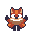
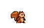
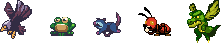

Game design
Yannie & Brannie is a 2D platform-adventure game designed for Web Games Development 2 course in Computer Games Development final year. On this page you will find information on the game design, inital game idea and concept, assets used in the game and more..
Game Overview
Yannie & Brannie presents a 2D multiplayer platform-adventure pixel art game in the style of Super Mario. The players in the game will choose between two main characters – a fox and a squirrel (Yannie and Brannie respectively), and will then further explore thematic levels. The main goal of the game is to reach the end of each level by passing different obstacles and unlocking blockages in teamwork. The game is developed using the Phaser framework for creating browser games and its targeted audience is children and teenagers from 10 to 15 years old. However, anyone can feel free to play and enjoy the game.
Concept
The main game idea aims to provide players with opportinuty to play an adventurous platform game together and help each other reach the end of each level. The main obstacles in the game take form of locked ways which players need to unlock by collaborating with each other. Furthermore, players will encounter enemies and will need to use strategy moves in order to reach the end of the level.
3 GAMES THAT INSPIRED YANNIE & BRANNIE:
- LEGO Star Wars: The Video Game - This Lego-themed, action-adventure video game was released in 2005 for PC following the story from Star Wars: Episode 1. The game allows two players to play on the same computer and assist each other on trying to fight droids, unlock doors and pass through different obstacles. Players are allowed to unlock and play different heroes from the saga (Obi-Wan, Qui-Gon Jinn, Padme, R2D2, C-3PO and others) and change through already unlocked heroes while in-game in order to use their special abilities. Although not a 2D genre, the game is similar to Yannie & Brannie in means of using a group effort to pass each level.
- Ibb & Obb – Another team-based oriented game is the puzzle platform video game developed by Sparpweed Games for PS3 and Windows. In the game two players collaborate in a world where gravity goes both ways (up and down) in order to get each other through each level. The game is focused on team play and strategy which is the main inspiration behind the planned for this project game.
- Super Mario – This famous platform video game series was created by Nintendo and first released in 1985. The game follows the adventure of Mario (Nintendo’s mascot) in the fictional Mushroom Kingdom as the player can run and jump across platforms and enemies in order to pass each level. The player mechanics in Yannie & Brannie are inspired from Super Mario because of their simplicity and ability to make the player feel freedom while moving across levels and kill enemies.
Characters
The game allows players to choose between two main characters – Yannie the Fox and Brannie the Squirrel.
 Enemies in the game are presented by eagles and opossums, and in future development different wild animals will be added such as ants, dragons, and frogs.
Gameplay and Mechanics
The game consists of three scenes – menu scene, in-game scene, and game over/win scene. In the menu scene the player will be able to start playing the game and choose his character, read the game instructions, check out the leader board and/or exit the game.
Once in-game the players enter a level full of obstacles including different enemies and blockages that need to be unlocked. Each player has a total of three lives at the begining of the game, however, players can collect additional lives throughout the level. If a player loses all of his lives the level will be restarted (applies to both players) and they have to start from the beginning. The main goal of the game is to take Yannie and Brannie throughout the level to their home (represented by a beautiful pixel art house). The level is then considered completed and the players are presented their respective players’ score and they can then continue to the next level of the game or return to the menu scene. Players' score is equal for both players and does not reset on level clear. When all levels are completed the score will be automatically saved in the leader board. The game consist of two levels and more will be added in future development.
The game aims to provide adventurous and enjoyable environment where players can dive into in their free time and work together towards a common goal as well as explore thematic levels and use their strategy skills.
- Player movement – while in game players will be able to move with the arrow keys on the keyboard. This limited player movement is inspired from games such as Super Mario where players do not need to aim and shoot at enemies and/or use special combat mechanics to kill them.
- Killing enemies – enemies in the game take form of eagles and opossums. Players can kill enemies by jumping onto them. If players collide with enemies in another way one life per collision will be taken from the respective player.
- Unlocking the path – players need to unlock the path in front of them in order to reach the end of the level. This system is designed to work in the following way: a pair of cranks for each blockage will be spread across the level for the players to find. After finding them the players need to stay on top of them at the same time and the respective blockage will blow open.
Game Features
- Multiplayer - this multiplayer game is design for 2 players. However, there is no players limitation for now.
Champion select – before starting the game players will be able to choose which characters to control in the game. This will happen in a champion select lobby once the players connect to the same server and hit play.- Unlocking blockages – in order to reach the end of the level and take Yannie and Brannie home, players will need to figure out how to unlock the blocked path on the way together. This feature aims to instigate player’s strategy skills and guide the game to a more team-based direction.
- Collectables - players will collect diamonds, cherries, and acorns throughout the level. Each diamond will give 10 score points to both players, each cherry will give 1 life to all the users who play with the Yannie Avatar and each acorn will give 1 life to all the players who play Brannie Avatar.
- Future development features – additional futures will be added in future development to make the game more rich and interesting such as chat/voice chat systems to help players communicate and collaborate with each other. Another possible features are implementing boss enemy combats, multiplayer for over two clients, and a saving progress system which players can use to save their level and/or in game progress for future.
Assets
The assets for the game are downloaded from the Unity Asset store where many free assets can be found.
- Character assets
The main characters of the game are Yannie the Fox and Brannie the Squirrel and Both have sprite sheet animations for Idle, Run, Jump, Crouch, and Hurt.
- Environmental assets
The environmental assets include tiles for creating a platform level, background images, trees, houses, doors, and more decorating assets such as crates, stones, mushrooms, spikes, signs, skulls, and others.
- Collectables
Collectables in the game will include gems, cherries, and acorns. Each gem collected will result on plus 10 points for the player, and cherries and acorns will increase the players’ lives respectively (cherries increase the number of lives of Yannie the Fox and acorns increase the number of lives of Brannie the squirrel).
- Sound assets
The sound assets for the game will be downloaded from www.freesound.org – a website that offers free sounds and music themes. The assets will be chosen carefully to fit the game aesthetics.
Conclusion
Yannie and Brannie is a 2D multiplayer platform-adventure game created on Phaser 3 Seku. The game aims to give players the opportunity to enjoy playing together and use strategy moves in order to pass each level and enjoy a pixel art atmosphere similar to the famous Super Mario series. THe game, the website, and the promotional video for this project are developed using:
- HTML5, JavaScript, Bootstrap, Phaser
- Node.js, MySQL, Socket.io, Express.js
- Tiled map editor
- Adobe Photoshop, Adobe Premiere Pro